お客様は、
もうAIに聞いている。
.png)
.png)
.png)
.png)
.png)
.png)
中小企業・店舗オーナー様へ
ChatGPT・Google AI検索の時代。
その検索、もうAIが答えてる。
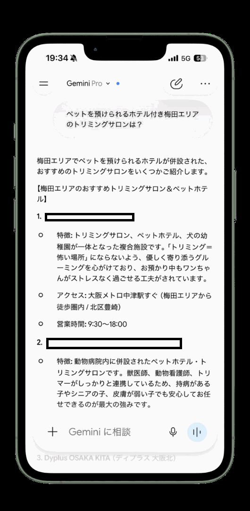
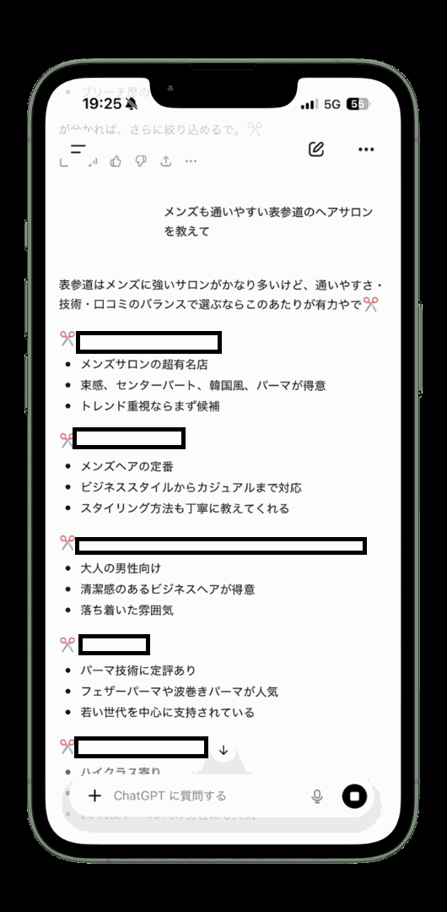
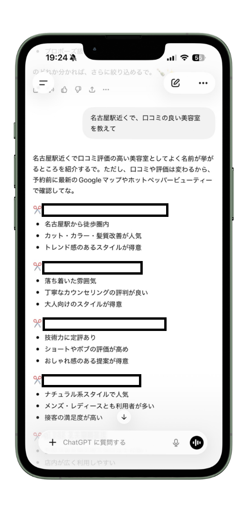
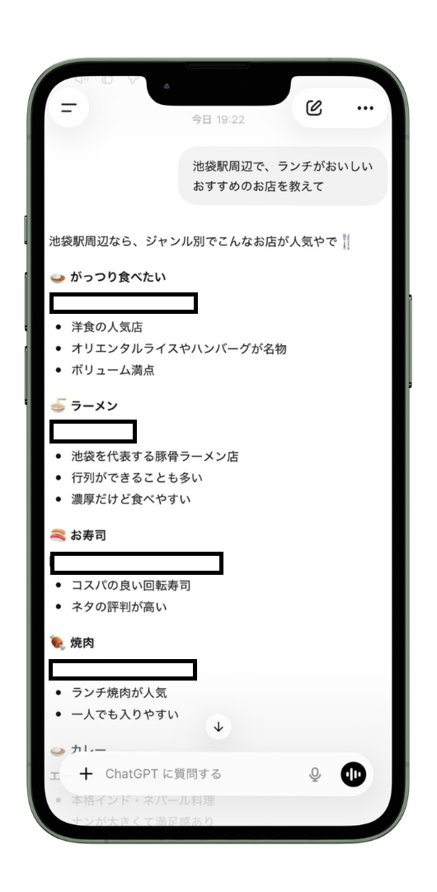
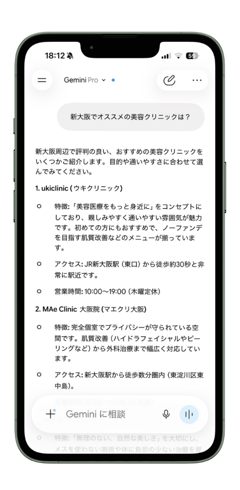
AI検索で
自社が出てこない…
何から手をつければ
いいかわからない…
対策しても
効果が出るのか不安…
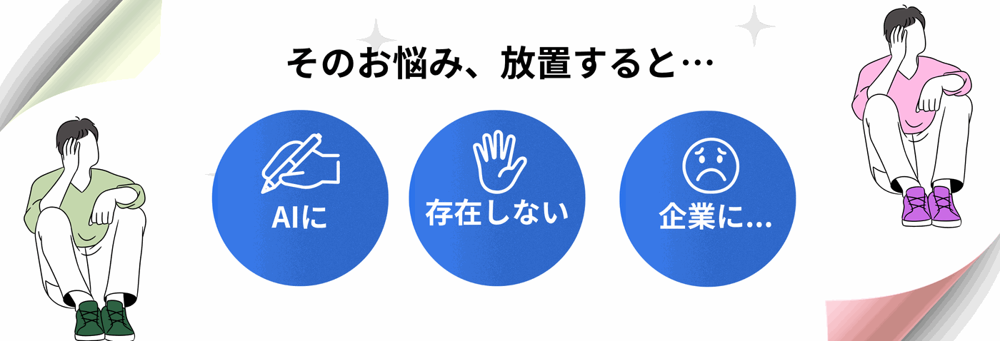
お客様は検索エンジンだけでなく、
AIに直接たずねています。
主要なAIすべてに「おすすめ」される
ことを目指します。
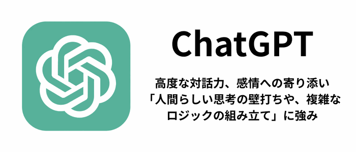
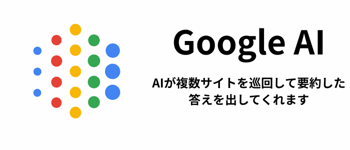
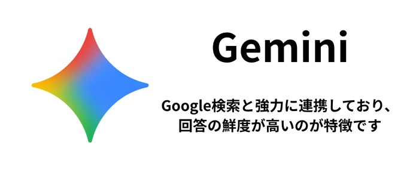
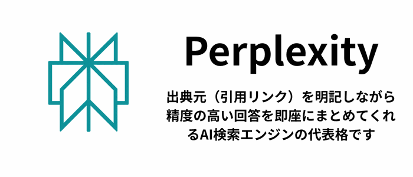
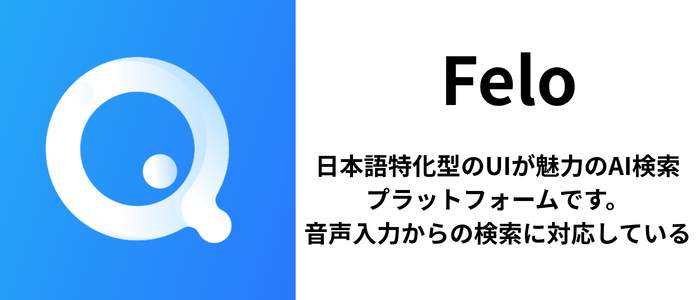
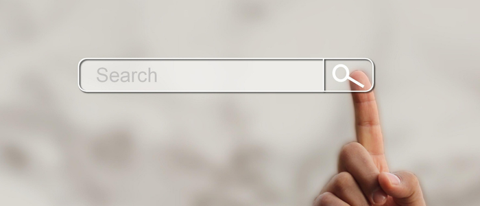
お客様がAIにたずねる、さまざまな場面。そのとき御社の情報が正しく使われる土台を整えます。
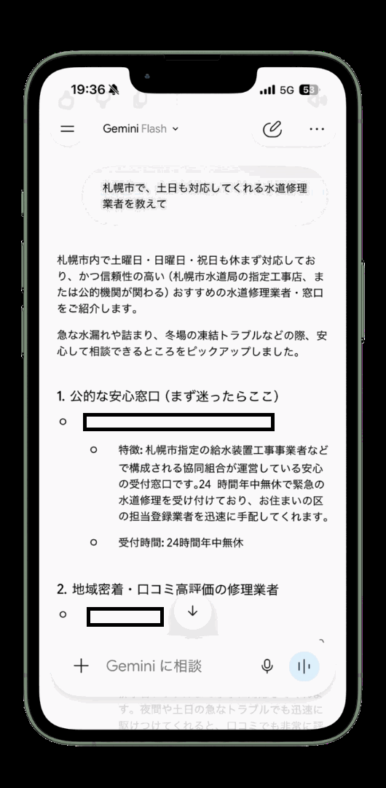
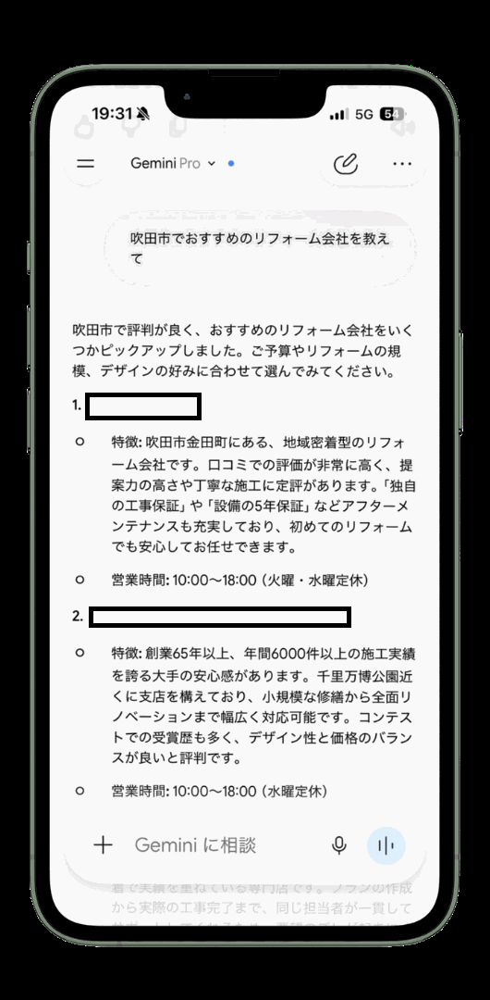
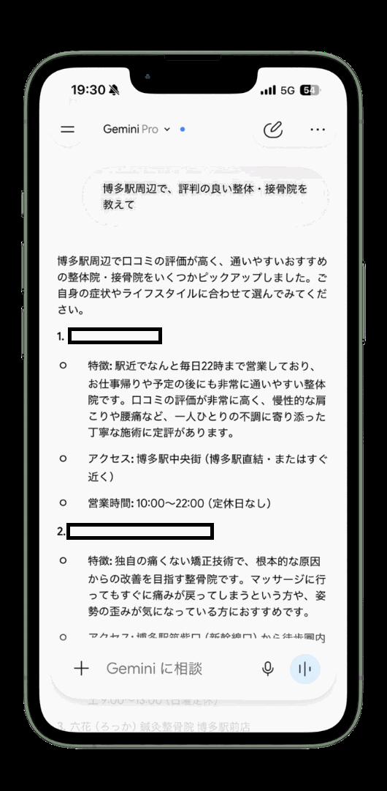
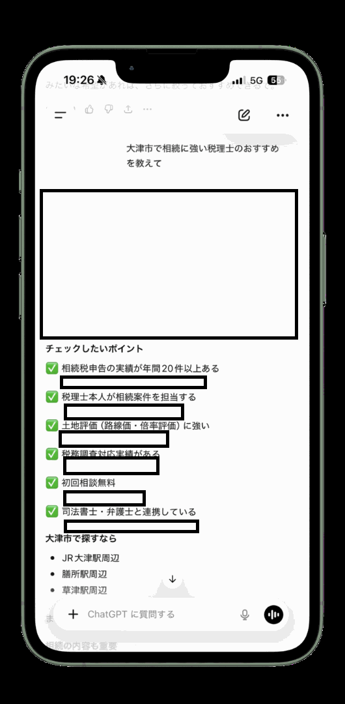
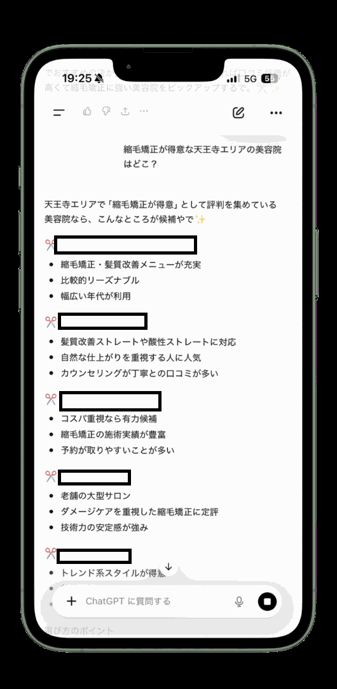
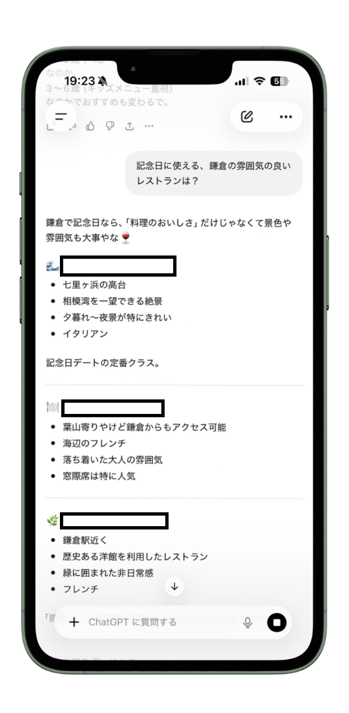
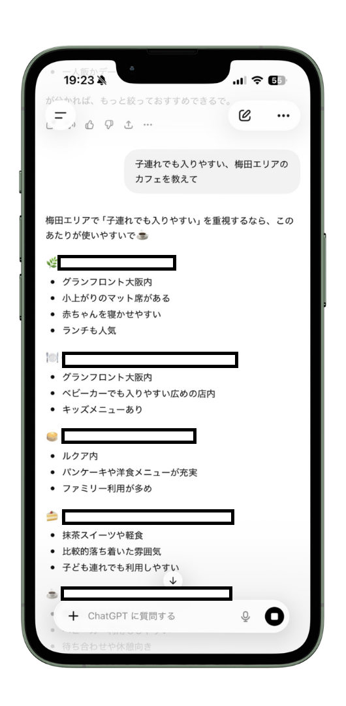
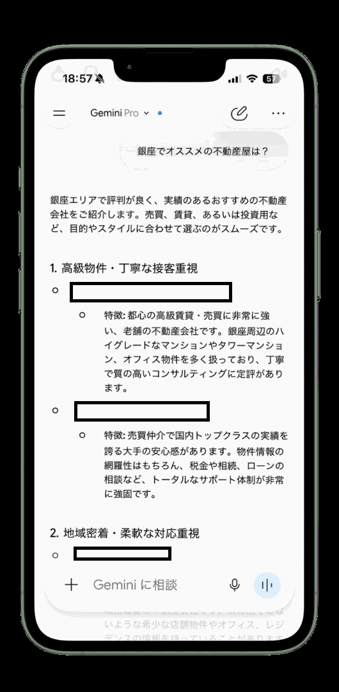
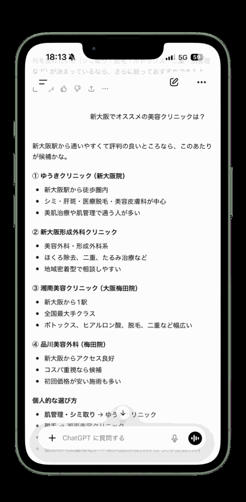
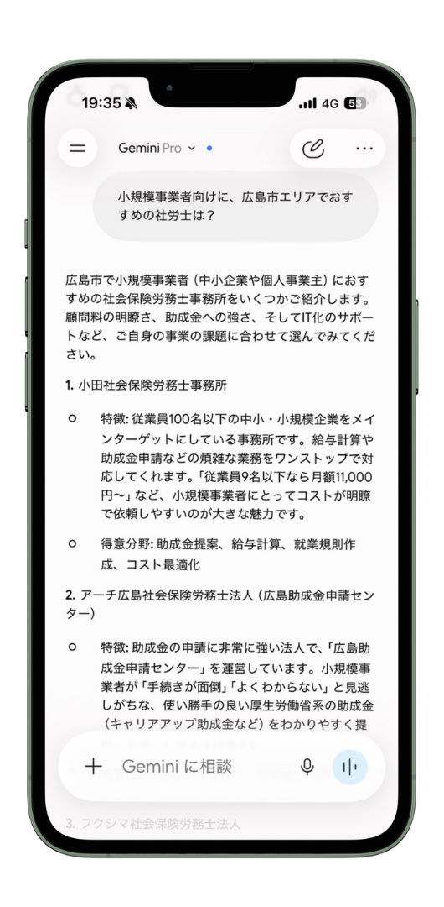
6種類+
対応するAI検索
ChatGPT・Gemini ほか
0円〜
まずは無料でAIO対策について
相談をする
即日返信
最短でご連絡
AIではなく弊社スタッフがしっかり対応
※ 対応AIは今後の普及状況に応じて拡張します。
AI検索は日々進化。定期的な見直しと改善で「選ばれ続ける状態」を保ちます。
作り直しは不要。今あるサイトを土台に対策し、初期費用を抑えてすぐ着手できます。
「AI検索でどう紹介されているか」を定期レポート。やりっぱなしにせず、成果を一緒に確認しながら改善します。
構造化データ・FAQ・引用されやすい文章構成で、AIが情報を拾いやすいサイトに作り込みます。通常のSEOで終わらせません。
まず現状を知りたい方も、本格的に運用したい方も。
ご状況に合わせて選べます。
AIO診断
まずは現状を知りたい方へ
📦 納品：レポート ＋ Zoomオンラインミーティング
※下記プランにつきましては、AIO診断を受けた方のみとなります
現状把握・基盤構築
まずAI対策を始めたい会社
AI認知度向上運用
本格的にAI経由の認知獲得を狙う会社
AIブランド構築支援
AIでブランド・指名を確立したい会社
※ 料金はサイトの状況により異なります。
無料相談のうえでお見積りします。
良いことだけでなく、
知っておいていただきたい点も
包み隠さずお話しします。
効果は100%保証ではありません
AIの評価の仕組みは各社が非公開で、日々変化します。「必ず1位」のような断言はできません。
実際の変化を見て改善を続けます。
継続して取り組むことが大切です
一度対策して終わりではありません。AI検索は常に進化するため、定期的な見直しと更新が大切です。
単発ではなく伴走型で続けます。
すぐに結果が出るとは限りません
反映には数週間〜数ヶ月かかります。即効性より中長期で「選ばれ続ける状態」を目指します。
現実的な見通しを先にお伝えします。
計測には限界があります
AI検索での露出は、まだ完全には数値化できません。現状で分かる範囲を、ごまかさずレポートします。
分かること・分からないことを明確に共有します。
AIに認識されない原因は特定できます。
「AIが引用・認識しやすい状態」
を作ります。
できること・できないことを正直にお伝えし、納得いただいた上で、長くご一緒できることを大切にしています。
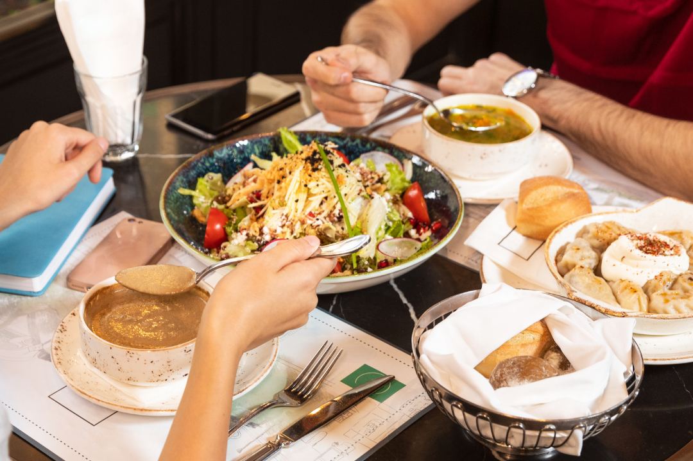
「近くで〇〇が食べられる店」とAIに聞かれたときに、お店が候補に挙がる状態へ。
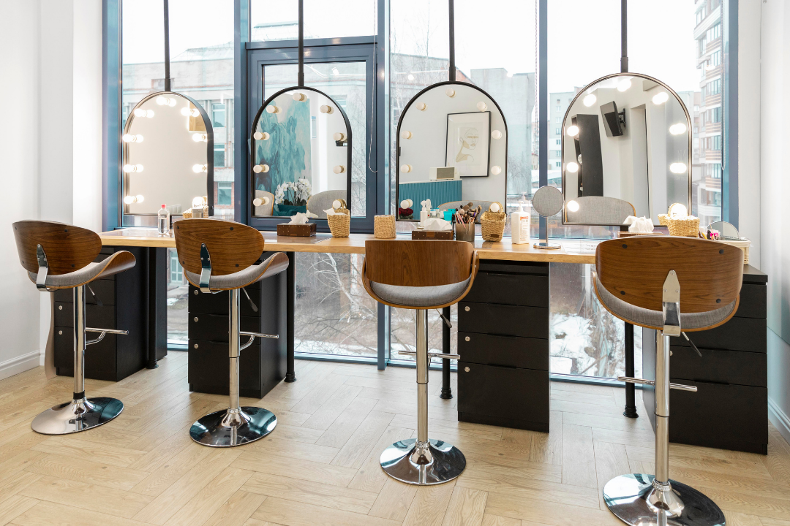
「〇〇でおすすめのサロン」への回答に、施術メニューや強みが反映されやすく。
「〇〇の相談はどこ？」という質問で、専門性と対応エリアが正しく伝わるように。
※ 業種別の活用イメージです。
成果はサイトの状況により異なります。
LINEで無料相談
下のボタンから友だち追加。簡単なヒアリングだけ、費用は一切かかりません。
現状診断・ご提案
今のサイトがAIにどう見られているか診断し、最適な対策プランをご提案します。
対策スタート・改善継続
ご納得いただいてから着手。AIに選ばれる会社へ、伴走しながら改善を続けます。
※ ご提案までは完全無料。無理な勧誘はいたしません。
SEOは検索結果での順位向上が目的、AIO対策はChatGPTやGoogle AIなどの「AIの回答」に紹介・引用されることが目的です。土台は重なりますが、AIが情報を拾いやすい設計を追加で行います。
飲食・サロン・クリニック・士業・小売など、地域名や指名で探されることが多い業種と相性が良いです。BtoB企業の指名・信頼獲得にも有効です。まずはご相談ください。
AIが引用しやすい記事・FAQ・構造化データの整備、会社概要や商品ページの最適化、主要AIでの紹介状況のモニタリングなどを行います。御社の状況に合わせて優先順位を決めて進めます。
反映には数週間〜数ヶ月かかることがあります。AIの仕組み上、即効性より中長期での積み上げが基本です。現実的な見通しを最初にお伝えします。
確実な保証はできません。AIの評価基準は各社が非公開で日々変化するためです。私たちができるのは「AIが引用・認識しやすい状態」を整えることです。この点は正直にお伝えしています。
主要なAIで御社が実際にどう紹介されているかを定期的に調査し、レポートでご報告します。やりっぱなしにせず、変化を一緒に確認しながら改善を続けます。
はい。既存サイトがあれば活かしますが、ない場合のご相談も可能です。まずは無料相談でご状況をお聞かせください。
可能です。既存の取り組みを活かしながら、AIO対策の部分だけを追加で担当する形にも対応します。役割分担はご相談のうえで調整します。
はい。オンライン完結のため、地域を問わず全国対応が可能です。打ち合わせもオンラインで行います。
AIO対策は継続が前提ですが、無理な縛りは設けません。詳細は診断後のご提案でご説明します。
サイトの状況やご要望により異なるため、無料相談のうえでお見積りします。まずはお気軽にご相談ください。